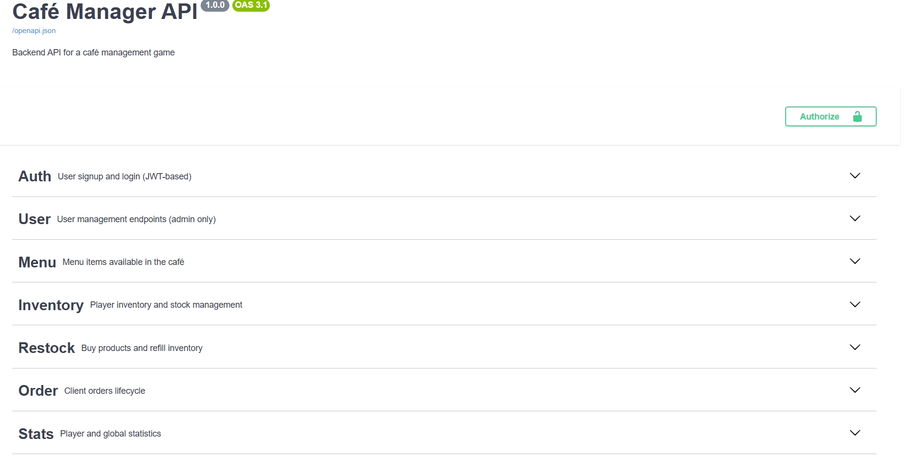

Hi, I'm Jenny Saucy.
I'm a backend developer from Switzerland, self-taught and practice-driven. I build reliable REST APIs with clean architecture, focusing on business logic, data consistency, and maintainable code.
About me
After exploring different paths, I found my calling in backend development when I realized what truly motivates me: solving technical problems and building systems that work under real constraints.
I learn best by building. I've spent the last year mastering backend fundamentals through hands-on projects, focusing on REST APIs, database design, authentication, and testing. I enjoy turning complex business requirements into clean, robust code.
Technologies I work with:
Backend: Python · FastAPI · SQLAlchemy · Pydantic
Database: PostgreSQL · SQLite · Alembic
Testing & Tools: Pytest · Docker · JWT · REST APIs
Outside of coding, I enjoy activities that balance focus and movement — you might find me at a yoga class, climbing at the gym, or even better, in nature.
Café Manager API
A REST API backend for a café management game where players manage inventory, serve customer orders, and track their progress. Built as a learning project to understand backend development fundamentals.
Core Features:
- Authentication & Authorization: JWT tokens with role-based access (admin/player)
- Business Logic: Inventory management, order workflows with status validation (PENDING → COMPLETED/CANCELLED)
- Error Handling: Try/except blocks with database rollback to maintain data consistency
- Testing: Automated tests with Pytest covering authentication, permissions, and business logic
- Documentation: Auto-generated API docs with Swagger UI, comprehensive README
What I Focused On:
- Data consistency: Ensuring stock and money updates happen together with proper error handling
- Access control: Players can only manage their own orders and inventory, admins have full access
- Code organization: Separating business logic, validation, and API routes for better maintainability

Key Takeaways:
- How to structure a REST API with authentication and role-based permissions
- The importance of validating business rules before modifying database state
- Writing tests that verify both success cases and error scenarios
- Database modeling with relationships (one-to-many, foreign keys)